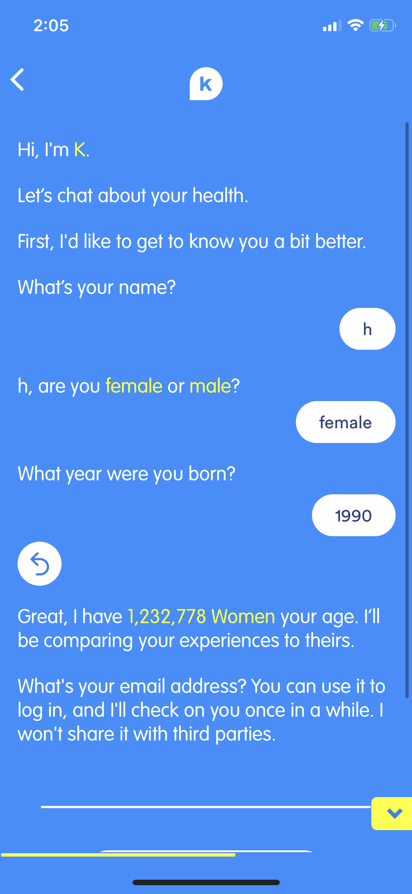
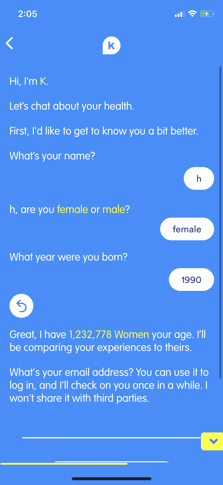
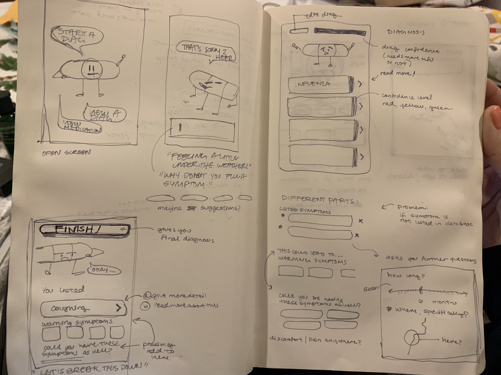

This project began as a brainchild of Dr. Li where she outlined the flaws of current symptom checker apps and common mistakes her patients were reporting to her when they self-diagnosed themselves. From there, I discussed with her the different problems she ran into when talking to her patients, and the medical process that she typically goes through. She gave me an excel document that simplifies her process of diagnosing her patients, which lists out all symptoms she typically analyzes and how she comes to her conclusion of diagnosing her patients.

When this idea was originally pitched to me, Dr. Li wanted to target 18-50 year olds. I felt that the
With Dr. Li and her team, we did a competitive analysis on the currently existing symptom checker apps using her medical expertise and my experience with analyzing user needs and user journeys. We noted many apps such as WebMD and K Health understand much medical knowledge for it to be easy to digest.


 

A glance into my sketchbook! While consulting with Dr. Li, I talked to her about her ideas for the application and went through the different things we could do with this brainchild. She discussed the possibilities of a chatbot, emergency text decision tree...

After analyzing WebMD and several other diagnosis apps, we began to look at the holes I saw in their user flow and began to map out the user journey of CareConnect. Through this we looked to incorporate less daunting and friendlier interactions into an app that organized and compartmentalized the medical information that we felt were harder to digest.

After creating my paper prototypes, I discussed with Dr. Li on the full user process. She wanted to have some kind of indication from the app to notify the user when it is time to see a doctor. We discussed the necessity for this; I had thought it was a little roundabout to use an app to diagnosis yourself, only for the solution to be "Go see a doctor!" instead of directly seeing/calling a doctor.


After the sketches were complete, I began to work on the low fidelity mockups on Sketch. I wanted to make sure that the user experience / user journey worked first, before I began to implement more details such as images and colors.


After completing the low-fidelity mockups, I conducted a user test before moving on to higher fidelity wireframes. I wanted to evaluate if the flow of the symptom checker made sense, and was intuitive, because it slightly differed from other symptom checkers (from my competitive analysis).
- Adding details and checking out different symptoms were different actions. Used different though processes and therefore I decided to separate them.
- Adding details UI is a little confusing, can get messy really quickly
- Curious as to where confidence levels come from (some sort of explanation needed)
- Recovery Time UI can be fine for simple diagnosis, but for more complicated datasets, may be too fuzzy
I began to work on the mid-fidelity mockups, adding in color and typefaces. I worked with several different color schemes before getting to this one. I continued user testing my mid-fidelity prototype in order to adjust the minute details.

After getting the major interactions down, I began exploring the smaller ones and fixing the user experience between each interaction so that it was more fluid and intuitive. I discussed with my user testers to see what they expected and what they would like to see instead.